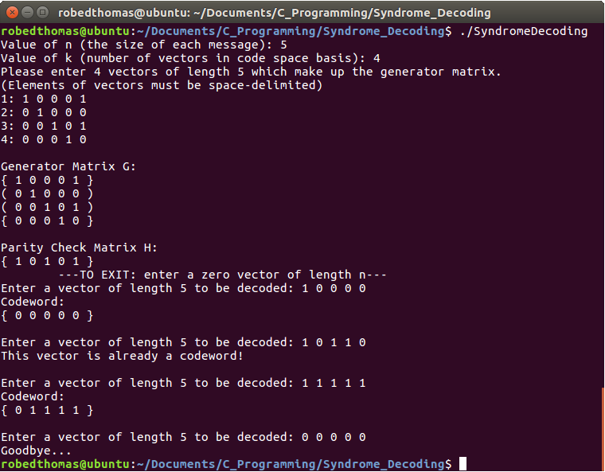

Below is a list of my most meaningful and challenging projects, both personal and for classes.
-
This was a personal project I made which allows the user to easily draw custom polygons. The polygons are all randomly colored. Polygons are created by clicking inside of the window to define the vertices of the polygon. Once the vertices are all defined, the user can press any key except the Backspace key to lock in the polygon. The user can delete the youngest polygon on the screen by pressing the Backspace key.
I pursued this project as a way to solidify my skills with Java's AWT library, which is an older library that adds support for constructing GUIs and drawing inside of them. AWT is rarely used today since it has been mostly replaced by the more modern Swing library. However, AWT is an excellent tool for introducing new programmers to the concepts of graphics.
-

I completed this project as an assignment for the Algorithms course which I took at EIU. The challenge of the assignment was to parse a set of points in order to find all groups of at least four points that fall on the same line. Three different algorithms of varying efficiency had to be used to complete this problem, and empirical evidence had to be provided to support the student's hypothesis for each algorithm's computational complexity. The algorithms I used to solve this problem are as follows:
- Brute: Analyzes every possible four-tuple of points, checking each time for them to fall on the same line. This is the simplest algorithm for solving the given problem, but is also the least efficient. Since for N points there are approximately N^4 four-tuples of these points (actually there are [N C 4] such four-tuples), this algorithm has an abysmal computational complexity of N^4.
- Better Brute: This is a slightly improved version of the Brute algorithm. It analyzes a pair of points in order to find the slope between the two points, then checks each of the remaining points to find points with the same such slope. Since there are roughly N^2 pairs of points and roughly N points left afterward, this algorith has an improved (but still unfortunate) computational comlpexity of N^3.
- Fast: This is the most efficient of the algorithms that I used to solve the problem. This problem focuses on one point at a time, sorting each other point into a list in order of their slope from the original point. By traversing this list in search of groups of three or more consecutive points with the same slope from the original point, one can determine four-tuples of points on the same line. Since there are N points and the sorting method has a computational complexity of N log(N), the Fast algorithm has a computational complexity of N^2 log(N).
-
This project was done as part of an assignment for the Computer Science II course I took at EIU. It is a simple calculator GUI built using Java's AWT and Swing libraries. This was the first GUI-based project I undertook and taught me a great deal about modern GUI construction.
The calculator uses double-precision floating point values only, which occasionally leads to some mathematical falacies appearing. It features addition, subtraction, multiplication, and division. A single value can also be stored and recalled later using the "Store" and "Restore" buttons.
-
This is a project done entirely in C which renders and displays a Julia set. Julia sets are beautifully intricate mathematical fractals which exist in the complex plane. They are generated by applying a particular mapping (often called c) to each point on the complex plane repeatedly. The points that do not converge to a limit are said to be inside the Julia set. In the picture to the left, points in the Julia set are in black, points that are almost in the Julia set are bright, and points that are clearly not in the Julia set are darker.
Each Julia set is defined by the mapping that is applied (which is a function from the complex plane to the complex plane). This program allows the user to specify this mapping, thus allowing any Julia set to be rendered. The user may also choose the size of the display window, the size of the chunk of the complex plane to be displayed, and the point on the complex plane to center around. Some interesting mapping functions are: c = 0.285 + 0i, c = -07269 + 0.1889i, and c = -0.8 + 0.1560i.
All of my C applications were built in the Ubuntu environment, but they come with Makefiles which can build in both Ubuntu and Mac environments. Unfortunately, most Windows environments have very limited support for C applications, so constructing these applications in a Windows environment will probably take much more work than what I detail here. In order to build the application, open a command prompt and navigate to the directory with the .c files, .h files, and the Makefile. Then, simply execute the command "make" inside of the command prompt. An object file (.o file extension) should be constructed which can then be executed.
When you run this application, it will expect nine command line arguments, in the following order:
- The width (in pixels) of the window in which the Julia set will be displayed
- The height (in pixels) of the window in which the Julia set will be displayed
- The width (on the real number line) of the complex plane to be examined
- The height (on the real number line) of the complex plane to be examined
- The value on the X axis of the complex plane which the image of the Julia set will be centered on
- The value on the Y axis of the complex plane which the image of the Julia set will be centered on
- The real component of the complex constant C, which is a property that characterizes each Julia set
- The imaginary component of the complex constant C
- The number of threads to be used to process the Julia set
-

This is a C project which I completed as an assignment for the Coding Theory course offered at EIU. The course's main focus is on correcting errors in messages of bits which have been transmitted over an imperfect line of communication. The basic concept is that we can detect if an error has occurred by only using a fraction of the possible messages allowed by the message size. For instance, say we only wanted to send three-letter-words to someone but we knew that some of the letters might get replaced with other ones when we sent the word. By increasing the size of the messages to six letters while still only sending three-letter-words, we can now receive invalid messages (messages that don't contain a three-letter-word) and thus can determine if an error has occurred during transmission. The concept in Coding Theory is the same, except using individual bits instead of letters.
Syndrome decoding is a powerful algorithm which converts erroneous messages to the keyword that they most likely were before being sent. It operates on messages that were produced by a linear code (a code defined by a generator matrix) and were passed through a noisy channel (a channel which can produce errors in the messages, such as flipping a bit). The algorithm determines the shortest distance from the erroneous message received to a valid keyword, thus yielding the most likely keyword. The nitty-gritty of how the algorithm operates can be seen inside the code I have posted on Github and linked below, in the file SyndromeDecoding.c.
-
This is another of my projects done completely in C. It is a recreation of the classic arcade game Lunar Lander. This projecy was an assignment for the Topics in C course that I took at EIU. The assignment's twist was that the game had to be improved with a new feature. I chose to add a feature that would allow players to design and play on their own maps. This is achieved by passing in an input file to the game which contains a list of vertices such that the lines between these vertices define the game's terrain. This paves the way for other features to be added in the future such as procedurally generated maps or a graphical interface to simplify building maps.
Since I previously had limited experience in working with graphics, constructing this game provided a lot of interesting challenges. These challenges include tracking the lander as it moved near the edge of the screen, displaying flashing text, and even producing my own sound effects for the lander's boost and crashing. By far the most difficult problem I encountered was in displaying the level as the lander looped from the front edge of the terrain to the back edge of the terrain (moving left). In the end, this project provided a great lesson in patience and paying strict attention to edge cases.
I used the Simple Directmedia Layer (SDL) library in the making of this game. SDL is C library which provides simple functionality for interacting with hardware. SDL was used primarily for processing keyboard inputs, displaying the game, and playing sound effects.
My Professional Experience in Software Engineering
-
Software Engineer Intern - Northrop GrummanWhat I Did: At this internship, I worked with a team of interns and full time staff to produce a software suite designed for streamlining the testing of electrical equipment. Throughout the internship, I mainly used Python to produce drivers for each model of equipment. Later in the internship I used HTML, CSS, and JavaScript to produce a batch of web pages to help disseminate information about our project. All of this work was done inside of the Agile development environment. As the project neared completion, my team and I presented our results to other employees who were interested in adopting our software suite.What I Learned and Took Away: This internship taught me several valuable skills. Previous to my internship I had never used Python, HTML, CSS, or JavaScript; I learned all of these languages on the job and have been using them since. I also became significantly more familiar with the version control software Git as well as fundamental version control concepts such as working down branches, merging between branches, and reverting to previous states. More importantly, I learned about software development in a professional group setting, and especially about the value of consistent communication between team members. To that end, being exposed to the Agile development environment was a delight, as it emphasises streamlining communication and completing tasks in an orderly and timely fashion. All in all, this internship has laid a strong foundation for my development as a software engineer.